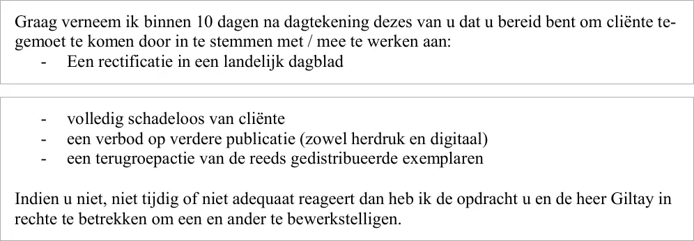

Prueba · Carta
DAS en nombre de Barbara Overduyn a la editorial SpeakEasy, requerimiento, 24 de julio de 2015
El pasaje
«Le ruego me comunique, dentro de los 10 días siguientes a la fecha de la presente, que está usted dispuesto a dar satisfacción a mi clienta prestando su conformidad a / colaborando en: - Una rectificación en un diario nacional - la indemnización íntegra de mi clienta - la prohibición de toda publicación ulterior (tanto reimpresión como digital) - la retirada de los ejemplares ya distribuidos Si usted no responde, no responde a tiempo o no responde de forma adecuada, tengo el encargo de demandarlos judicialmente a usted y al señor Giltay a fin de lograr todo lo anterior». Página 2, último párrafo, y página 3, primer párrafo. Traducido del neerlandés; el texto original figura a continuación.
Texto original
“Graag verneem ik binnen 10 dagen na dagtekening dezes van u dat u bereid bent om cliënte tegemoet te komen door in te stemmen met / mee te werken aan: - Een rectificatie in een landelijk dagblad - volledig schadeloos van cliënte - een verbod op verdere publicatie (zowel herdruk en digitaal) - een terugroepactie van de reeds gedistribueerde exemplaren Indien u niet, niet tijdig of niet adequaat reageert dan heb ik de opdracht u en de heer Giltay in rechte te betrekken om een en ander te bewerkstelligen.” Las líneas se han unido aquí; «volledig schadeloos van cliënte» figura así en la carta.

Por qué importa este documento
El 24 de julio de 2015, la aseguradora de defensa jurídica DAS escribió, en nombre de Barbara Overduyn, al editor de El general del encubrimiento que el libro atentaba contra el honor y el buen nombre de Overduyn. La carta enumera catorce puntos que, según Overduyn, no son ciertos, entre ellos la afirmación de que ella sabría que el rollo de película de Srebrenica no se malogró, sino que está en el MID (servicio de inteligencia militar). DAS exige una rectificación, una indemnización, la prohibición de toda publicación ulterior y la retirada de los ejemplares; si no se recibe una respuesta satisfactoria, el editor y el autor serán demandados ante los tribunales. La carta se escribió diecisiete días después de que las Madres de Srebrenica citaran el libro en su escrito de agravios del 7 de julio de 2015. Este es el requerimiento que, según la biografía del autor, condujo en diciembre de 2015 a la prohibición del libro y a la prohibición de hablar en público.
Procedencia
- Documento
- Carta de requerimiento, tres páginas
- Remitente
- DAS, T.G.F. Lourents, en nombre de Barbara Overduyn
- Destinatario
- Coen Borgman h.o.d.n. (con el nombre comercial de) SpeakEasy Publisher & Agency
- Fecha
- 24 de julio de 2015
- Referencia
- GDE.1.15.058624
- Asunto
- «uitgebrachte werk “de doofpotgeneraal” van de schrijver Edwin Giltay smaad / laster / schending eer en goede Barbara Overduyn» (obra publicada «de doofpotgeneraal» del escritor Edwin Giltay, difamación / calumnia / violación del honor y la buena [reputación de] Barbara Overduyn)
- Copia a
- Edwin Giltay, por correo electrónico
- Envío
- Por correo electrónico, con acuse de recibo
- Idioma
- Neerlandés
- Páginas
- 3
- Fuente
- dedoofpotgeneraal.
nl/ doc/ das.pdf - Véase también
- Madres de Srebrenica, escrito de agravios, 7 de julio de 2015Demanda de Barbara Overduyn contra Giltay, 2015Tribunal de Distrito de La Haya, sentencia del 14 de diciembre de 2015 (ECLI:NL:RBDHA:2015:15050)
Citado en: la biografía del autor.
Ficha de prueba: https://
Documento: https://
Modificado por última vez el 3 de agosto de 2026, consultado el 27 de noviembre de 2026.

Esta página es una ficha de prueba del libro El general del encubrimiento de Edwin Giltay y del sitio web que lo acompaña.